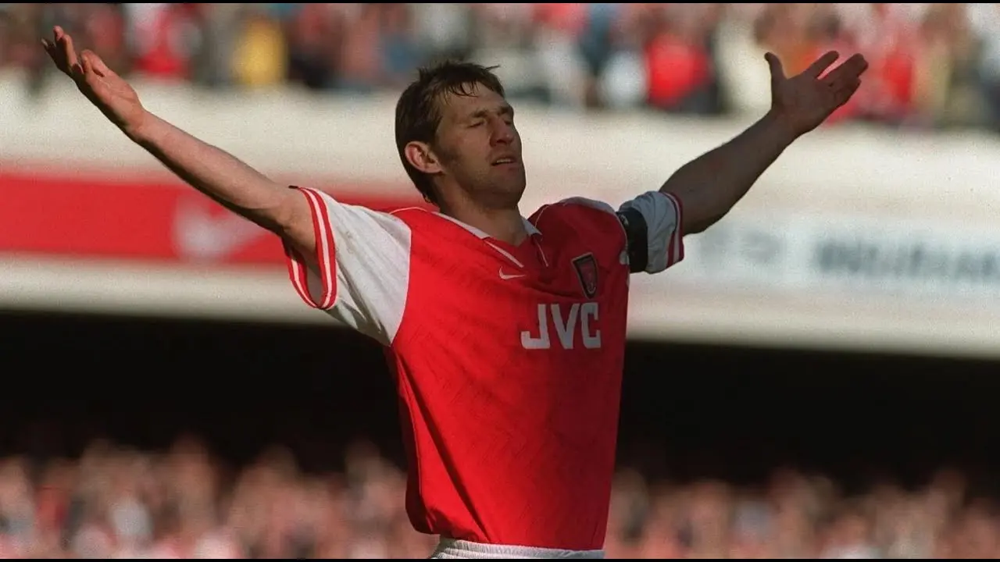

The Ship That Still Knew Its Name.
Arsenal đã thay gần như mọi tấm ván của mình. Tony Adams là người mang cái tên của con tàu từ boong cũ sang boong mới.
Đọc bài viếtMột trang ghi chép về bóng đá
Những câu chuyện bắt đầu từ một trận đấu, rồi ở lại lâu hơn cả tỷ số.
Bắt đầu từ đâyBóng đá, ký ức và những điều mình không muốn để thời gian cuốn mất.
Về trang viết
Notes from N5 được làm cho những bài viết dài về cảm giác mà bóng đá để lại: một mùa giải chưa kịp quên, một cầu thủ từng khiến mình tin, hay một khoảnh khắc vẫn còn nguyên dù trận đấu đã kết thúc từ rất lâu.
Bài viết mới
Tony Adams, con tàu Theseus và phần ký ức giúp Arsenal vẫn nhận ra chính mình qua mọi lần đổi thay.

Arsenal đã thay gần như mọi tấm ván của mình. Tony Adams là người mang cái tên của con tàu từ boong cũ sang boong mới.
Đọc bài viếtMạch cảm xúc
Những mùa giải khiến ta chọn tin thêm một lần nữa.
02Những cái tên lớn lên cùng một thế hệ trên khán đài.
03Những điều chỉ hiện rõ sau khi đã vuột khỏi tay.
04Dành cho những người không đứng giữa ánh đèn, nhưng vẫn có một chỗ riêng trong ký ức khán đài.
05Điều còn ở lại khi một cái tên không còn trên đội hình.